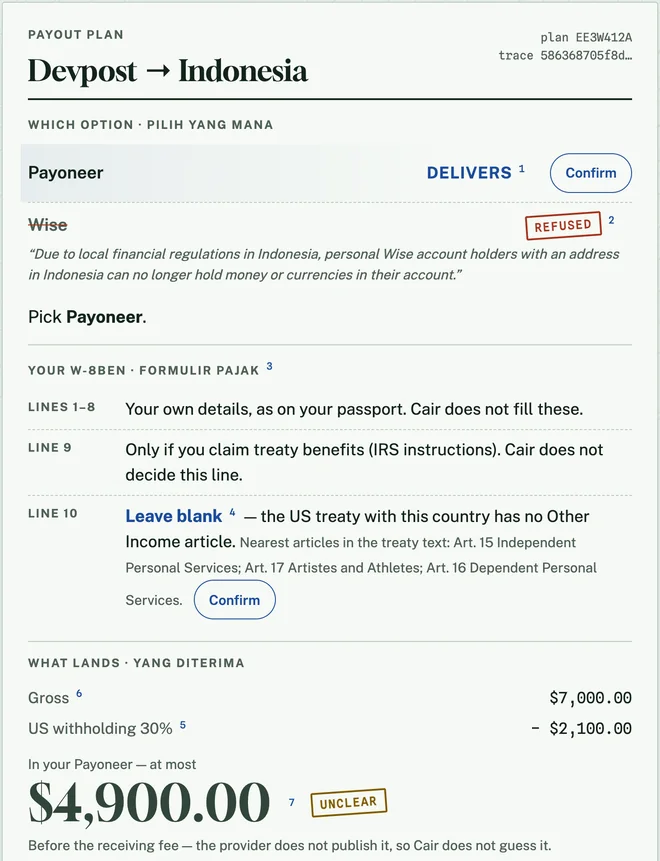
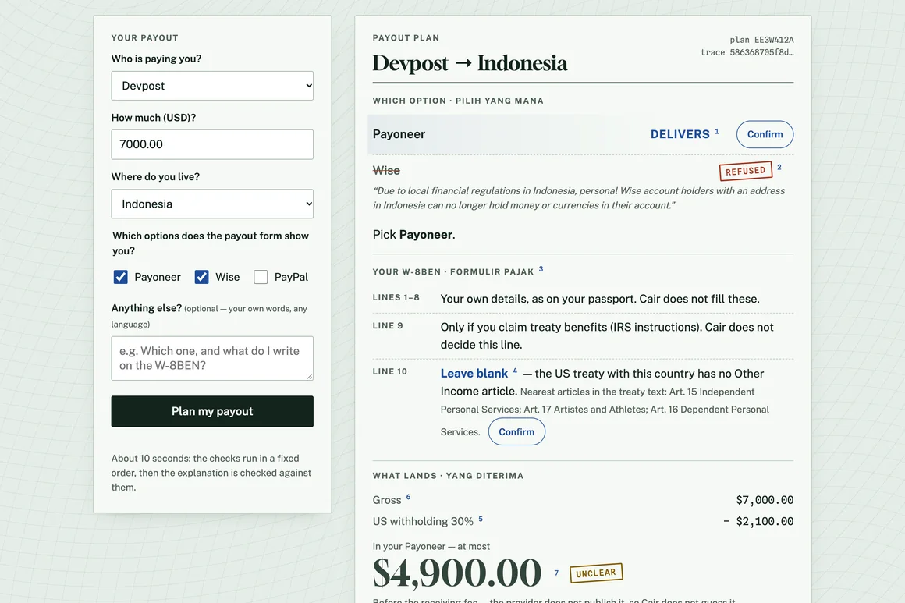
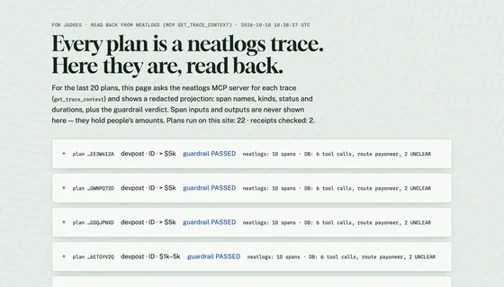

The payout agent that says no, and footnotes every yes.1
neatlogs read-back
get_trace_context 58636870…
- TOOLrail_eligibility · wise NO
- RETRIEVERtreaty_lookup · no Other Income article
- TOOLfee_calc · at most 4900.00
- GUARDRAILPASSED · 7 sourced
Exhibit A · Wise Help Centre
“…personal Wise account holders with an address in Indonesia can no longer hold money or currencies in their account.”
WISE-ID · wise.com/help · read 2026-10-10
Devpost's claim form still offers Wise.
Three ways it breaks.
Wise is on the form.
It can't hold money for an Indonesian address.
WISE-ID
Line 10 invites a guess.
The treaty has no Other Income article.
TRTY-ID
Nobody quotes the fee.
Payoneer: “Varies by marketplace.”
PAYO-PRICING
One tool-less model call said
Pilihan Payout Terbaik: Wise
No source “Best payout option: Wise”
Cair returned
Wise Refused
Line 10: blank
≤ $4,900.00 Unclear

Code decides. The model words it.
Specimen · live at app.cair.edycu.dev

1 2 3 4- 1Payoneer delivers, footnoted to its page
- 2Wise refused, in Wise's words
- 3Line 10: leave blank
- 4At most $4,900.00, fee unclear

/verify · traces read back over MCP
Same model, 48 questions.
Recommends a dead route
fewer is better
Says UNCLEAR when unsourced
more is better
Trace d1fa1ed7… · run fail-fx_quote-r1
The rate API fails. The plan finishes.
- fx_quoteErrorfx_quote unavailable
- fx_quote · retryErrorsame failure
- fx_quote_fallbackStalelast ECB rate · 17881 · 2026-10-09
- provenance_guardrailPassedno new figures
Three instruments.
neatlogs
One trace per plan. search_traces found two real bugs; /verify reads traces back.
rca-01.md · evidence/traces/
Entire
Graph search ranked the fixed rule first. Checkpoints off: public repo.
evidence/entire/
cfo.ai
Inputs on file.
Model pendingdocs/BUSINESS-PLAN.md
Cheap to run. Honest about limits.
- Three countries fully sourced; others UNCLEAR.
- Forward receipts from real users: n = 0.
- Explains forms, never files.
The ask
Try it on the form you have open.
The payout route a chatbot can't get wrong.
app.cair.edycu.dev